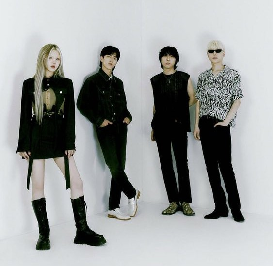
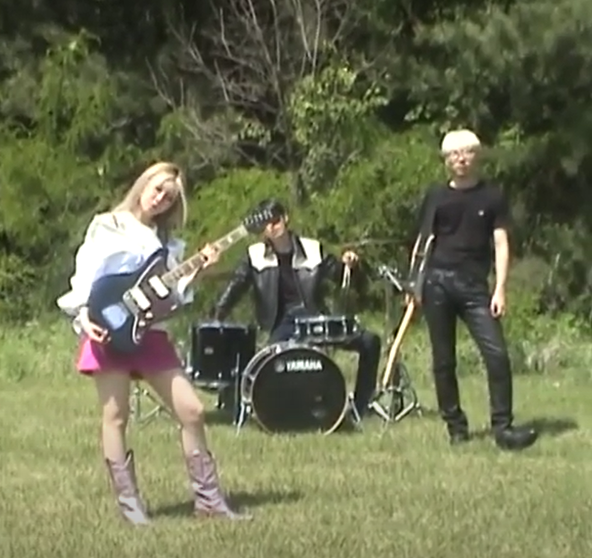

|  | S.A.D
|
|---|
Nicer My boyfriend hates when I smell the other guys / I'm like "who are they" / He doesn't really let me open my heart to anyone, so don't I / I am a quiet talker, / Sensitive lover / But when he has no guts / I could shoot with a gun / When I'm in hunger / I bite him into pieces / You would want to be / A better existence, better shadow / Or better listener / You would have to be / Much nicer to everyone you know / But I can't I can't / You would want to be / A better existence, better shadow / Or better listener / You would have to be / Much nicer to everyone you know / But I can't I can't // you should be nicer. x4 // My momma hates it when I deny that she was good to me in my childhood / I wasn't really a hugger but a kisser to some guys, but I don't with my family / Am I a nice girl / As a daughter / Do you recognize her? / You might be the same as her / A disappointment, invisible one, / Yourself / "You would want to be / A better existence, better shadow / Or better listener / You would have to be / Much nicer to everyone you know" / But I can't I can't / I've always been my own weakness / Myself, me as anything / I've always been my own weakness / 'Cause my love never had faith in me and says / "You would want to be / A better existence, better shadow / Or better listener / You would have to be / Much nicer to everyone you know" / But I can't I can't / You would want to be / You would have to be |
|---|
|  | Medicine
I'm such a trouble to you / But I'm a fucking medicine to the world / At least to my brother / I'm such a naive person / But I do fucking know what I want / From the world // Don't ever speak to me / Or think you really get me / When I have yet to start anything / Don't ever tell your dream / Compared to mine, it's just a dream / And I'm giving life to my daydreams // Run me in your cheap delusion / But my worth's immeasurable to the world / Especially to my lovers / Wish I would fear the future / But it's too goddam bright for your lies / For your lies / For the world // Don't ever speak to me / Or think you really get me / When I have yet to start anything / Don't ever tell your dream / Compared to mine, it's just a dream / And I'm giving life to my daydreams // I'm such a trouble to you / But I'm a fucking medicine to the world / At least to my brother / I'm such a naive person / But I do fucking know what I want / From the world // Don't ever speak to me / Or think you really get me / When I have yet to start anything / Don't ever tell your dream / Compared to mine, it's just a dream / And I'm giving life to my daydreams / Don't ever speak to me / Or think you really get me / When I have yet to start anything / Don't ever tell your dream / Compared to mine, it's just a dream / And I'm giving life to my daydreams |
|---|